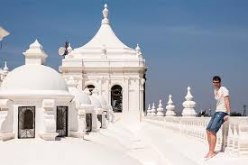
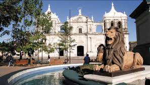
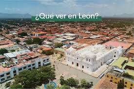

Símbolos Patrios
Los símbolos patrios de Nicaragua son la Bandera Nacional, el Escudo de Armas y el Himno Nacional ("Salve a ti"), establecidos oficialmente para representar la soberanía, paz y pureza del país. Creados en 1908 y reconocidos en 1971, destacan por su diseño centrado en el azul (justicia) y blanco (pureza), junto a elementos naturales y el Escudo.
Símbolos Patrios Oficiales
- La Bandera:Compuesta por tres franjas horizontales: dos azules en los extremos (justicia/lealtad) y una blanca en el centro (pureza/integridad) con el escudo nacional.
- El Escudo de Armas: Un triángulo equilátero que representa la igualdad y rectitud. Contiene cinco volcanes (unión centroamericana), un arco iris (paz), el gorro frigio (libertad) y dos mares.
- El Himno Nacional:Titulado "Salve a ti, Nicaragua", escrito en 1918 por Salomón Ibarra Mayorga. Es conocido como el himno más corto de América y el único que no menciona la guerra.

Historia Breve
Nicaragua, oficialmente República de Nicaragua, es un país ubicado en América Central. Su capital y ciudad más poblada es Managua, aunque
anteriormente era León. Está compuesta por quince departamentos y dos regiones autónomas: Costa Caribe Norte y Costa Caribe Sur. Se ubica
en el hemisferio norte, entre la línea ecuatorial y el trópico de Cáncer, aproximadamente entre los 11° y los 15° de latitud norte y
respecto al meridiano de Greenwich, entre los 83° y los 88° de longitud oeste.
Constituyéndose con ello como el país más extenso de América Central. Nicaragua cuenta con una población de 6 803 886 habitantes (2023).
Limita al norte con Honduras, al sur con Costa Rica, al oeste con el océano Pacífico y al este con el mar Caribe.[1] En cuanto a límites
marítimos, en el océano Pacífico colinda con El Salvador, Honduras y Costa Rica; mientras que en el mar Caribe colinda con Honduras,
Colombia y Costa Rica.[7] Son reconocidas las lenguas de los pueblos indígenas originarios como el criollo costeño, misquito, sumo,
garífuna y rama.
Lugares Turísticos Imprescindibles
Nicaragua es un destino fascinante conocido como la "tierra de lagos y volcanes", destacando por su autenticidad y paisajes contrastantes. Los lugares imprescindibles incluyen:
Granada y Las Isletas:
La ciudad colonial más antigua del continente, ideal para recorrer a pie y hacer tours en lancha por las isletas del Lago Cocibolca.


Isla de Ometepe
Una isla formada por dos volcanes (Concepción y Maderas) en el Gran Lago de Nicaragua, perfecta para el ecoturismo, senderismo y avistamiento de aves en la reserva Charco Verde.


Volcán Masaya
Parque Nacional donde puedes observar lava hirviente desde el borde del cráter activo, una experiencia única.


León
Conocida por su vibrante ambiente estudiantil, arte callejero y su majestuosa catedral blanca (Patrimonio de la Humanidad), además de ofrecer sandboarding en el volcán Cerro Negro.



Corn Island (Big y Little Corn)
Paraísos caribeños con agua color turquesa, ideales para hacer esnórquel, buceo y descansar en playas de arena blanco.


San Juan del Sur y Playas del Pacífico
El epicentro del surf, con playas cercanas como Maderas, Majagual y La Flor (famosa por el desove de tortugas).


Laguna de Apoyo
Una laguna de aguas cálidas y cristalinas dentro del cráter de un volcán inactivo, perfecta para relajarse, nadar y practicar kayak.


Cañón de Somoto
Uno de los destinos naturales más impresionantes del norte, ideal para la aventura y el senderismo.


Archipiélago de Solentiname
Ubicado en el Gran Lago de Nicaragua, conocido por su arte primitivista, naturaleza exuberante y tranquilidad.


Reserva Natural Volcán Mombach
Ofrece senderos boscosos en las faldas de un volcán inactivo con vistas impresionantes a las isletas de Granada.